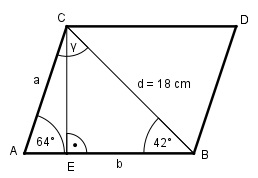

Aufgabe 138 Berechnen Sie die Fläche A des Parallelogramms.

Es liegt der Fall SWW (Seite d, Winkel 42°, Winkel 64°) vor. Der Fall hat dann eine eindeutige Lösung, wenn α + β < 180° ist. Sinussatz: d a --------- = --------- |*sin 42° sin 64° sin 42° d * sin 42° 18 cm * 0,6691 a = ------------- = ---------------- = 13,4 cm sin 64° 0,8988 Im Dreieck AEC: EC sin 64° = ----- |*a a EC = a * sin 64° = 13,4 cm * 0,8988 = 12 cm γ = 180° - 64° – 42° = 74° Sinussatz: Fall SWW (Seite d, Winkel 74°, Winkel 64°): d b --------- = --------- |*sin 74° sin 64° sin 74° d * sin 74° 18 cm * 0,9613 b = ------------ = ---------------- = 19,3 cm sin 64° 0,8988 A = b * EC = 19,3 cm * 12 cm = 231,6 cm2